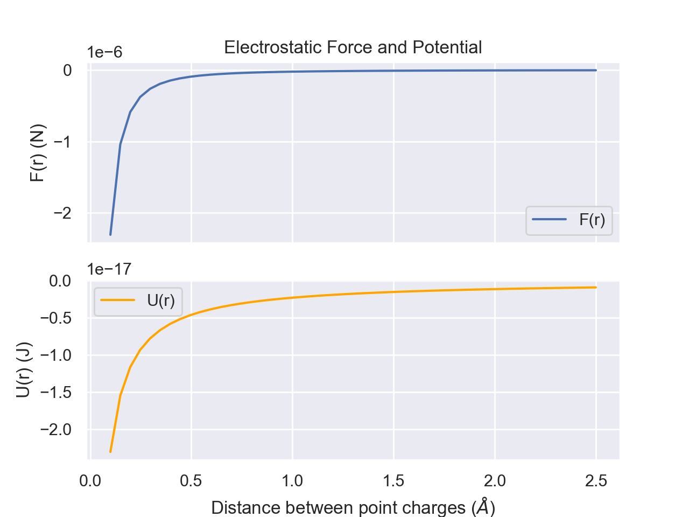
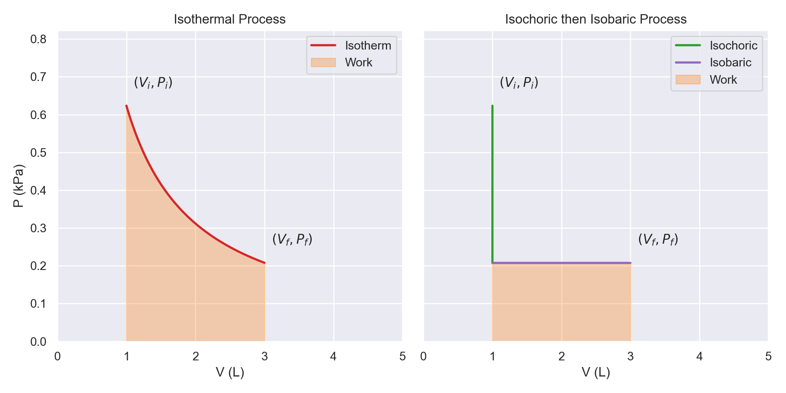

Introductory Thermodynamics
Laws of Thermodynamics
First Law of Thermodynamics
The first law can be formulated in different ways. A common source of confusion for students is the seemingly inconsistent formula.
Variant 1:
$$\Delta U=q+w$$
Variant 2:
$$\Delta U=q-w$$
So why will you see both? This is due to differences between authors in how they define the quantities in the equation.
Let's start by defining q, which we will call "heat," since this is less controversial. q will be the heat added to the system. Heat flowing (positive q) into the system will increase the amount of internal energy intuitively, so a positive q will contribute to an increase in energy.
Heat flowing out of the system (negative q) will decrease the amount of internal energy.
Now, for defining w, which is the "work" term. Here are the two equations again with their definition
- \(\Delta E=q+w\), positive w here is defined as work done to the system and negative w is defined as work done by the system
- \(\Delta E=q-w\), positive w here is defined as work done by the system and negative w is defined as work done to the system
Regardless of your definition of w, if work is being performed on the system, energy is being transferred to it, but if the system is expending energy to do work, then it will lose energy.
From here on out, the textbook will use variant 1.
Now, the terms work and heat have not been preicsely defined yet.
Working definitions for the terms at this point will be:
- Work is controlled, harnessed transfer of energy
- Heat is uncontrolled transfer of energy
Work can take various forms, but the ones we will be considering will be
- Expansion work or "pV work," such as a piston moving due to a pressure difference.
- Chemical work, which harnesses energy from chemical reactions
There is a differential form of the equation which is expressed as:
$$dE=\delta q + \delta w$$
The heat and work variables have \(\delta\) instead because they are
inexact differentials. That is to say, they have path-dependent integration.
While the change in energy will be the same, the contribution from work vs heat depends on how the process is done.
Second Law of Thermodynamics
The second law of thermodynamics states that total entropy is non-decreasing over time.
$$\Delta S_{universe}\geq 0$$
This is sometimes put into formula by breaking down the universe into the "system" or thing of interest and the "surroundings" or everything else.
$$\Delta S_{sys}+\Delta S_{surr} \geq 0$$
A common mistake that students make is interpreting it as saying that entropy cannot decrease locally.
This is
not true. Entropy can very well decrease in a system, but it will be offset by a greater increase in the surroundings.
In fact, much of biology involves this very trade-off.
Entropy
What sort of chemical processes have positive \(\Delta S\)?
In general, going from solid to liquid or liquid to gas has an increase in entropy.
Creating more molecules from a complex one has positive entropy.
Energy
Forms of Energy
Energy can take different forms. The two main categories are Kinetic and Potential energy.
As its name suggests, kinetic energy is associated with movement. Here are 3 forms which we will consider throughout the book:
- Translational: a molecule's movement through space
- Rotational: a molecule rotating about some axis
- Vibrational: bonded atoms vibrating
Potential energy is associated with position rather than movement. This can also take several forms, including but not limited to:
- Chemical bonds
- Gravitational
- Concentration gradients
- Electrostatic interactions
- Compressed spring
Physics Equations
As one formulation of the First Law states, there is conservation of energy with no input or removal from the system.
However, energy can be converted from one form to another. Imagine a ball rolling off of a table; its gravitational potential energy gets converted into kinetic energy, sending it downward.
U sometimes refers to potential energy, but also internal energy in general. In this section, U will refer to
Potential energy and E will refer to
Total energy.
In this section, positive work will refer to work
done by the system which is opposite what we had before, but it is common convention.
$$W=-\Delta U$$
How is are work required and potential energy related to forces?
$$W=\int F\cdot dx$$
The work done is the integral of the force, F, applied over the distance. This force may be a function of the position, x.
Hooke's Law
Hooke's law describes the restoring force in a spring. In plain English, Hooke's law states that the restoring force a spring has is proportional to the displacement from the rest length.
$$F=-k(x-x_0)$$
where x is the length of the spring, \(x_0\) is the rest length of the spring, k is the spring constant, and F is the force. The sign is negative as the force counteracts the stretching and applies a force in the opposite direction.
We can also call \(x-x_0\) to be simply x by having our coordinate system have x_0=0; longer is positive x; compressed is negative x.
Using our formula for work, we can calculate the work required to stretch a spring.
$$W=\int_0^z (-k x) \cdot dx$$
Because the force is in the opposite direction as the dx vector, we get an additional negative sign which cancels things out.
$$W=\int_0^z(kx)dx$$
$$=\frac{1}{2}kz^2$$
The work required is \(\frac{1}{2}kz^2\) which will be converted into potential energy.
Python code:
def Hooke_F(delta_x,k):
return -k*delta_x
def Hooke_U(delta_x,k):
return 0.5*k*delta_x**2
x_values = np.linspace(-1,1,100)
k=1
fig, axes = plt.subplots(2,sharex=True)
axes[0].plot(x_values,
[Hooke_F(x,k) for x in x_values])
axes[0].set_ylabel('F($\Delta x$) (N)')
axes[1].plot(x_values,
[Hooke_U(x,k) for x in x_values],
color='orange')
axes[0].set_title("Hooke's Law Force and Potential")
axes[1].set_xlabel('Displacement ($\Delta X$)')
axes[1].set_ylabel('U($\Delta x$) (J)')
plt.show()
Electrostatics
Another common force is electrostatic. The electrostatic force between two point charges is described by Coulomb's Law.
$$F=\frac{1}{4\pi D\varepsilon_0}\frac{q_1q_2}{r^2}$$
where F is the force, D is the dielectric constant for the medium, \(\varepsilon_0\) is the vacuum permittivity (a constant), \(q_i\) is the charge of particle i, and r is the distance between the two charged particles.
In this form of Coulomb's Law, a negative value for F means an attractive force and a positive F means a repulsive force.

Python code:
k = 8.98e9
def Coulomb_F(q_1,q_2,r):
return -k*q_1*q_2/((r*1e-10)**2)
def Coulomb_U(q,Q,r):
return k*q*Q/(r*1e-10)
x_values = np.linspace(1e-1,1)
q_1 = 1.602e-19
q_2 = -1.602e-19
fig, axes = plt.subplots(2,sharex=True)
axes[0].plot(x_values,
[Coulomb_F(q_1,q_2,x) for x in x_values],label='F(r)')
axes[0].set_ylabel('F(r) (N)')
axes[1].plot(x_values,
[Coulomb_U(q_1,q_2,x) for x in x_values],
color='orange',label='U(r)')
axes[0].set_title("Electrostatic Force and Potential")
axes[0].legend()
axes[1].legend()
axes[1].set_xlabel('Distance between point charges ($\AA$)')
axes[1].set_ylabel('U(r) (J)')
plt.show()
Dielectric constant
The values it can take are
$$D \geq 1$$
In a vacuum, D=1. In other mediums, D>1 which makes the electrostatic force weaker.
In water, \(D_w\approx 80\) which significantly weakens the force. Since much of biology occurs in aqueous environments, this is important to consider.
In the interior of proteins, the dieletric constant is much closer to 1, meaning electrostatic interactions on the inside of proteins are stronger than on the outside surface, everything else being equal.
Morse Potential
The harmonic oscillator/Hooke's law model is treating a molecule as if it were two nuclei connected by a spring in a classical sense.
This model is pretty decent at describing behavior close to the equilibrium bond distance, but as r gets further away from \(r_e\), we need a better model.
This is where the Morse potential comes in. This is an improved version which takes into account things like nuclear-nuclear repulsion from Pauli's exclusion principle and bond dissociation. When r is too small, the Morse potential jumps in potential energy quicker than with a simple Hooke's law approximation. Bonds can't stretch infinitely; bonds break if separation grows too large. The Morse potential takes this into account by having U asymptotically approach a value in the limit as r goes to infinity instead of continuing to increase quadratically. The limit as r approaches infinity is your bond dissociation energy.
The equation for the morse potential is given by
$$U(r)=D_e (1-e^{-a(r-r_e)})^2-D_e$$
where \(D_e\) is related to the dissociation energy.
Python code:
def Morse_U(r,De,a,r_e):
r = r*1e-10 # convert to angstrom
r_e = r_e*1e-10
return De*((1-np.exp(-a*(r-r_e)))**2)-De
x_values = np.linspace(0.3,6,100)
r_e = 1.99
D_e = 240
a = 0.75e10
fig = plt.figure()
plt.plot(x_values,
[Morse_U(x,D_e,a,r_e) for x in x_values],
label='F(r)')
plt.ylabel('Potential (kJ/mol)')
plt.xlabel('Bond distance ($\AA$)')
plt.title("Morse Potential")
plt.show()
Lennard-Jones Potential
The Lennard-Jones potential describes Van der Waals interactions between two molecules.
The potential is given by
$$U(r)=4\varepsilon \left[(\frac{\sigma}{r})^{12}-(\frac{\sigma}{r})^6\right]$$
Python code:
# Constants
epsilon = 20 # Depth of potential well
sigma = 3.5 # Distance at which potential is zero
# Define a range of distances (r)
r = np.linspace(3, 6, 500) # Adjust the range as needed
# Calculate the Lennard-Jones potential for each distance
V = 4 * epsilon * ((sigma / r)**12 - (sigma / r)**6)
# Create the plot
plt.figure(figsize=(8, 6))
plt.plot(r, V,
label='Lennard-Jones Potential',
color='blue')
plt.xlabel('Distance ($\AA$)')
plt.ylabel('Potential Energy (cm$^{-1}$)')
plt.title('Lennard-Jones Potential')
plt.legend()
plt.grid(True)
#plt.ylim(-2, 2)
plt.xlim(2.5, 6)
plt.show()
Ideal Gas Model
Defining Ideal Gas
As a basic model, we will consider an
ideal gas. We will define an ideal gas by the following properties:
- Monoatomic, point particle
- No potential energy
- Elastic Collisions
Monoatomic, point particle
This means that the volume of the particle is 0. The term volume will often be used in our equations, but that will refer to the volume of the container (non-zero volume) holding the gas particles, not the volume of the particle(s).
This can also be stated as the size of the container is much greater than the size of the particle for a more realistic scenario.
The particle will also have no rotational or vibrational energy associated with it.
No interactions
The particle only possesses kinetic energy and does not have any potential energy or feel the effects of forces such as electromagnetism or gravity.
The particle will also not interact with any other particles, such as collision.
The only "interaction" that a particle will experience will be collision with the container walls.
Elastic collisions
When a particle hits the wall of the container, the particle will reverse that component of its velocity, maintaining its speed.
Kinetic Energy
For our above defined model, the kinetic energy of our gas is given by
$$K=\frac{3}{2}Nk_BT$$
where K is the kinetic enregy, N is the number of gas particles, k_B is Boltzmann's constant, and T is absolute temperature.
The kinetic energy is directly proportional to the temperature.
Ideal Gas Law
The ideal gas law gives a relationship between several state variables for an ideal gas.
$$PV=nRT$$
where P is the pressure, V is the volume of the container, n is the number of moles, R is a proportionality constant (Ideal Gas Law Constant), and T is the temperature.
It can also be formulated as
$$PV=Nk_BT$$
where N is the number of particles and \(k_B\) is Boltzmann's constant.
PV Diagrams
One useful tool for understanding thermodynamic processes is Pressure-Volume Diagrams.
This plots the path that a system takes, plotted by its pressure and volume.
There are four main types of processes that we will consider:
- Isothermal: constant temperature process
- Isobaric: constant pressure process
- Isochoric: constant volume process
- Adiabatic: No heat exchange
Isothermal Process
An isothermal process has constant temperature over the duration of the process.
Since pressure and volume are inversely proportional with everything else being held constant, the curve behaves like y=1/x.
In our monoatomic ideal gas, the energy of the system stays constant as N and T are unchanging.
By the first law, this means that the heat transfer must be equal to the negative of the work.
If the system expands and does x Joules of work, then x Joules of heat must flow into the system from the surroundings.
Isotherm curves give the possible states for a given temperature and mole.
The effect that temperature has on the set of states can be observed in the following figure:
Python code:
def ideal_gas(V,T,n):
# PV=nRT
R = 8.314
return n*R*T/V/1000 # for kPa
x_values = np.linspace(.5,5,100)
n = 0.25
T1 = 300
T2 = 400
T3 = 500
fig = plt.figure()
plt.ylim([0,ideal_gas(x_values[0],T3,n)])
plt.xlim([0,5])
plt.plot(x_values,
[ideal_gas(x,T1,n) for x in x_values],linewidth=2,color='tab:blue')
plt.plot(x_values,
[ideal_gas(x,T2,n) for x in x_values],linewidth=2,color='gold')
plt.plot(x_values,
[ideal_gas(x,T3,n) for x in x_values],linewidth=2,color='orangered')
plt.ylabel('P (kPa)')
plt.legend(['300K','400K','500K'])
plt.title("Isotherm Curves (n=0.25)")
plt.xlabel('V (L)')
plt.show()
Isobaric Process
In an isobaric process, the pressure remains constant throughout. Temperature and volume will both change proportional to one another.
In an isobaric process, the work is easy to calculate as P is constant, so the work is just \(P\Delta V\).
The temperature and energy will increase if the volume increases and the opposite happens if the volume decreases.
Python code:
def ideal_gas_temp(V,p,n):
# PV=nRT
R = 8.314
return round(V*p/n/R*1000) # for kPa
x_values = np.linspace(1,2.5,100)
n = 0.4
fig = plt.figure()
plt.ylim([0,1.5])
plt.xlim([0,3])
plt.scatter(x_values,
[1 for i in x_values],
linewidth=1,
cmap='coolwarm',
c=[ideal_gas_temp(i,1,n) for i in x_values])
plt.ylabel('P (kPa)')
plt.title(f"Isobaric Curve (n={n})")
plt.xlabel('V (L)')
plt.annotate(f'$T_i$={ideal_gas_temp(x_values[0],1,n)}K',
(x_values[0],1.1))
plt.annotate(f'$T_f$={ideal_gas_temp(x_values[-1],1,n)}K',
(x_values[-1],1.1))
plt.colorbar()
plt.show()
Isochoric (Isovolumetric) Process
In an isochoric process, the volume remains constant throughout. Temperature and pressure will both change proportional to one another.
Since there is no change in volume, there is no work being done. The change in temperature and energy shares the same sign as the change in pressure.
Since there is no work being done, the change in energy is solely due to heat exchange with the surrounding.
Python code:
def ideal_gas_temp(V,p,n):
# PV=nRT
R = 8.314
return round(V*p/n/R*1000) # for kPa
x_values = np.ones(100)
y_values = np.linspace(1.5,0.5,100)
n = 0.25
fig = plt.figure()
plt.ylim([0,2])
plt.xlim([0,2])
plt.scatter(x_values,
y_values,
linewidth=.5,
cmap='coolwarm',
c=[ideal_gas_temp(x_values[i],
y_values[i],n) for i in range(len(x_values))])
plt.ylabel('P (kPa)')
plt.title(f"Isochoric (Isovolumetric) Curve (n={n})")
plt.xlabel('V (L)')
plt.annotate(f'$T_i$={ideal_gas_temp(x_values[0],y_values[0],n)}K',
(x_values[0]+0.1,y_values[0]+0.1))
plt.annotate(f'$T_f$={ideal_gas_temp(x_values[-1],y_values[-1],n)}K',
(x_values[-1]+0.1,y_values[-1]-0.1))
plt.colorbar()
plt.show()
Adiabatic Process
In an adiabatic process, the PV curve looks similar to an isotherm, except it is steeper. An adiabatic expansion will decrease the temperature, doing work to expand the container. An adiabatic compression will increase the temperature.
No heat is exchanged during this process; thus, the change in energy is equivalent to the work.
Python code:
def ideal_gas_temp(V,p,n):
# PV=nRT
R = 8.314
return round(V*p/n/R*1000) # for kPa
def ideal_gas(V,T,n):
# PV=nRT
R = 8.314
return n*R*T/V/1000 # for kPa
def adiabatic_line(V):
return 1/(V**(5/3))
x_values = np.linspace(1,2.5,100)
y_values = [adiabatic_line(i) for i in x_values]
n = 0.25
T1 = ideal_gas_temp(x_values[0],y_values[0],n)
T2 = ideal_gas_temp(x_values[-1],y_values[-1],n)
print(T1)
fig = plt.figure()
plt.ylim([0,2])
plt.xlim([0,4])
plt.scatter(x_values,
y_values,
linewidth=.5,
cmap='coolwarm',
c=[ideal_gas_temp(x_values[i],
y_values[i],n) for i in range(len(x_values))])
plt.plot(x_values,
[ideal_gas(x,T1,n) for x in x_values],linewidth=2,color='tab:blue')
plt.plot(x_values,
[ideal_gas(x,T2,n) for x in x_values],linewidth=2,color='gold')
plt.ylabel('P (kPa)')
plt.title(f"Adiabatic Curve (n={n})")
plt.xlabel('V (L)')
plt.annotate(f'$T_i$={ideal_gas_temp(x_values[0],y_values[0],n)}K',
(x_values[0]+0.1,y_values[0]+0.1))
plt.annotate(f'$T_f$={ideal_gas_temp(x_values[-1],y_values[-1],n)}K',
(x_values[-1]+0.1,y_values[-1]-0.1))
plt.legend(['Adiabatic Process','Isotherm T=481K','Isotherm T=261K'])
plt.colorbar()
plt.show()
Adiabatic Free Expansion
In adiabatic free expansion, the gas is expanding against a vacuum. Since there is no exterior pressure that it must fight while the container expands, the work is 0 as well. This also means no change in internal energy.
The process is irreversible, however, and has a positive entropy change despite the lack of heat. This is an example of the Clausius Inequality which we will see next chapter.
Work: Area under the Curve
Because work and heat are inexact differentials, two paths that have the same start and end states will not necessarily have the same heat or work.
This is a benefit of using PV curves, as the work can easily be calculated from finding the area under the curve. The figure below is an example of two paths that have different amount of work extracted.
When going from left to right, the area under the curve is the work
done by the system. When going from right to left, the area udner the curve is the work
done to the system.

Python code:
def ideal_gas(V,T,n):
# PV=nRT
R = 8.314
return n*R*T/V/1000 # for kPa
x_values = np.linspace(1,3,100)
n = 0.25
T = 300
target_p = ideal_gas(x_values[-1],T,n)
fig, axes = plt.subplots(1,2,
sharey=True,
figsize=(10,5))
axes[0].set_ylim([0,ideal_gas(x_values[0],T,n)])
axes[0].set_xlim([0,5])
axes[0].plot(x_values,
[ideal_gas(x,T,n) for x in x_values],
linewidth=2,color='tab:red')
axes[0].fill_between(x_values,
[ideal_gas(x,T,n) for x in x_values],
alpha=0.3,color='tab:orange')
axes[0].set_ylabel('P (kPa)')
axes[0].legend(['Isotherm','Work'])
axes[0].set_title("Isothermal Process")
axes[0].set_xlabel('V (L)')
# least efficient
axes[1].set_ylim([0,ideal_gas(x_values[0],T,n)])
axes[1].set_xlim([0,5])
axes[1].plot([x_values[0],x_values[0]],
[ideal_gas(x_values[0],T,n),
ideal_gas(x_values[-1],T,n)],
linewidth=2,
color='tab:green',
label='Isochoric')
plt.plot([x_values[0],x_values[-1]],
[ideal_gas(x_values[-1],T,n),
ideal_gas(x_values[-1],T,n)]
,linewidth=2,
color='tab:purple',
label='Isobaric')
plt.fill_between(x_values,
[ideal_gas(x_values[-1],T,n) for x in x_values],
alpha=0.3,
color='tab:orange',
label='Work')
axes[1].set_title("Isochoric then Isobaric Process")
plt.legend()
plt.xlabel('V (L)')
plt.tight_layout()
plt.show()
However, it is important that not all paths are possible. The isothermal process is the most efficient going both ways.
- The work done by the system in an isothermal process is the maximum work that can extracted going from the initial state to the final state. Paths going from left to right must go below this curve.
- The work done to the system in an isothermal process is the minimum work that can inputted to go from the initial state to the final state. Paths going from right to left must go above this curve.
Heat Capacity
Common Chemistry Equations
Gibbs Free Energy
Gibbs free energy is a common quantity to work with in Chemistry instead of energy, as it takes into account entropy.
The common way that Gibbs Free enrgy is introduced in general chemistry is through the equations:
$$\Delta G^0 = \Delta H - T\Delta S$$
We can relate the Gibbs Free Energy to the equilibrium constant:
$$\Delta G^0 = -RT\ln(K_eq)$$
What is the standard state? We define it as having all the chemical species being 1M in concentration (except water).
Even though this may not be a realistic scenario, we need some reference point to capture the inherent nature of the reaction.
We can then adjust that value to take into account the actual concentrations in order to give us the real change in Gibbs free energy, \(\Delta G\).
$$\Delta G = \Delta G^0 + RT\ln(Q)$$